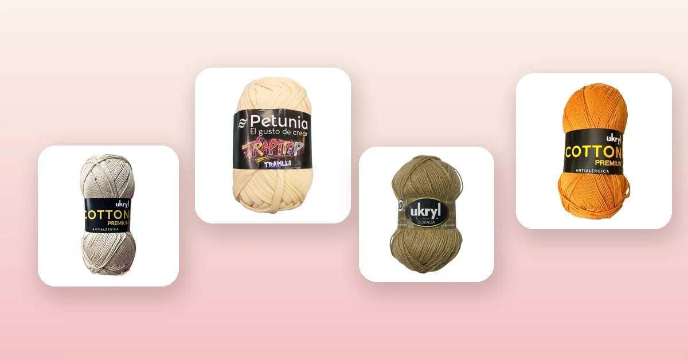

Proyectos de crochet
Cómo tejer un monedero a crochet paso a paso
Un monedero tejido a crochet es uno de los proyectos más gratificantes para quien busca algo rápido, útil y bonito: se termina en pocas horas, gasta poco material y queda perfecto como regalo o para vender en ferias. En esta guía te enseñamos desde la base hasta la solapa con cierre, pasando por los tipos de monedero, la guía de tamaños, cuánto hilo necesitas y las mejores ideas para decorarlo.

Materiales para tejer tu monedero
El monedero a crochet es el proyecto perfecto para aprovechar restos de hilo, practicar puntos nuevos y tener un resultado terminado en una sola tarde. Como es una pieza pequeña, necesitas muy poco material, pero la elección del hilo marca la diferencia entre un monedero que se deforma al primer uso y uno que dura años. Necesitas:
- 1 ovillo de hilo de algodón, trapillo o lana fina (un solo ovillo de 100 g alcanza para uno o dos monederos completos).
- Un ganchillo acorde al hilo: 2,5 a 3,5 mm para hilo de algodón, 3 a 4 mm para lana fina tipo Ukryl Etiqueta Dorada, y 6 a 8 mm para trapillo. Consulta nuestra guía de qué aguja o ganchillo usar para tejer si tienes dudas.
- Marcador de vueltas, aguja lanera y tijeras.
- Un botón, broche magnético o cremallera para el cierre.
Para un monedero firme que no se deforme, el hilo de algodón es imbatible. Estas son las mejores opciones del catálogo según el estilo que busques:
- Para un monedero fino y elegante: Hilo de Algodón Arena ($2.300) o Hilo de Algodón Mostaza ($2.300), de algodón 100% con excelente definición de punto. También el Hilo de Algodón Blanco ($2.300) y el Hilo de Algodón Negro ($2.300) para combinaciones clásicas bicolor.
- Para un monedero con estructura y volumen: Trapillo Petunia Crema ($1.700), Trapillo Petunia Gris ($1.700) o Trapillo Petunia Coral ($1.700). El trapillo da un tejido grueso y rígido que mantiene la forma sin necesidad de forro. Mira toda la línea en lana Petunia.
- Para un monedero suave con cuerpo: Lana Ukryl Etiqueta Dorada Camel ($1.800), Lana Ukryl Etiqueta Dorada Palo Rosa ($1.800) o Lana Ukryl Etiqueta Dorada Crudo ($1.800). La línea Etiqueta Dorada tiene un tacto aterciopelado que queda precioso en accesorios pequeños.
- Para un monedero liviano y fresco: Hilo Ukryl Natura Crudo ($1.500) o Hilo Ukryl Natura Arena ($1.500), un hilo fino ideal para monederos delicados de verano o para regalar.
Tipos de monederos a crochet
Antes de empezar a tejer, conviene decidir qué forma quieres. Cada tipo tiene su técnica y su encanto:
- Monedero rectangular: el más sencillo de todos. Se teje un rectángulo plano en ida y vuelta, se dobla por la mitad y se cosen los laterales. Es ideal para principiantes y para usar como estuche, portatarjetas o neceser pequeño.
- Monedero circular (tipo sobre redondo): se parte de un anillo mágico y se teje en espiral con aumentos hasta obtener dos círculos que se unen. Es el clásico monedero de abuelita y queda muy bonito con cambios de color concéntricos.
- Monedero con boquilla metálica: se teje la bolsa y se cose a un cierre rígido metálico (también llamado frame o boquilla). Da un acabado vintage y profesional, aunque requiere coser con aguja e hilo de coser.
- Monedero tipo cartera: un rectángulo más largo que se dobla en tres partes, con una solapa que cierra con botón. Permite llevar tarjetas, billetes y monedas separados.
- Bolsito bandolera miniatura: un monedero con correa larga que se lleva cruzado. Es perfecto para salir a caminar con lo justo: teléfono, llaves y tarjetas.
En esta guía cubrimos el método general que se adapta a todos los tipos. El paso a paso está pensado para un monedero rectangular con solapa, que es el más versátil, pero en cada sección indicamos las variaciones para las demás formas.
Guía de tamaños
El tamaño depende del uso que le darás. Un monedero solo para monedas puede ser muy compacto, pero si quieres que entre el teléfono o las tarjetas, necesitas más centímetros:
| Uso | Ancho | Alto (sin solapa) | Solapa |
|---|---|---|---|
| Solo monedas | 10 cm | 8 cm | 4 cm |
| Monedas y tarjetas | 12 cm | 9 cm | 5 cm |
| Cartera pequeña | 15 cm | 10 cm | 6 cm |
| Bolsito para celular | 12 cm | 18 cm | 5 cm |
Para un monedero circular, el diámetro recomendado es de 10 a 14 cm. Si es tu primer monedero, el tamaño «monedas y tarjetas» es el más práctico: cabe lo esencial sin ser demasiado grande ni demasiado pequeño.
La muestra de tensión
Aunque un monedero es pequeño, la muestra de tensión sigue siendo importante: si el tejido queda muy suelto, las monedas se saldrán entre los puntos. La regla es usar un ganchillo uno o dos números más chico que el recomendado en la etiqueta del hilo, para lograr un tejido bien compacto.
Teje un cuadrado de 10 × 10 cm en punto bajo con tu hilo y ganchillo. Cuenta cuántos puntos entran en 10 cm y multiplica por el ancho que necesitas. Si nunca has hecho una muestra, en la guía de cuánta lana necesito para tejer está el método completo.
| Dato | Valor |
|---|---|
| Puntos en 10 cm | 18 (punto bajo, ganchillo 3 mm) |
| Ancho del monedero | 12 cm |
| Cálculo | 18 ÷ 10 × 12 = 21,6 → 22 |
| Cadena base | 22 puntos + 1 cadena de giro |
Paso 1: teje la base del monedero
La base determina el ancho y la forma de tu monedero. Según el tipo que elegiste:
Monedero rectangular
- Haz la cadena base calculada en tu muestra (por ejemplo, 22 cadenas para 12 cm de ancho con hilo de algodón).
- Teje en punto bajo ida y vuelta, girando con 1 cadena al inicio de cada vuelta.
- Continúa hasta que el rectángulo mida el doble del alto deseado más la solapa. Para un monedero de 9 cm de alto con solapa de 5 cm, teje hasta alcanzar 23 cm de largo (9 + 9 + 5).
- Al tejer todo de una sola pieza evitas costuras innecesarias: simplemente doblarás el rectángulo más adelante.
Monedero circular
- Parte de un anillo mágico con 6 puntos bajos.
- Vuelta 2: haz 2 puntos bajos en cada punto (12 puntos).
- Vuelta 3: alterna 1 punto bajo y 1 aumento (18 puntos).
- Continúa aumentando 6 puntos por vuelta, espaciándolos de forma pareja, hasta alcanzar el diámetro deseado (10 a 14 cm).
- Teje dos círculos iguales: uno será el frente y otro el dorso.
Si quieres combinar colores, este es el momento: con Hilo de Algodón Mostaza para el centro y Hilo de Algodón Negro para los anillos exteriores logras un contraste muy llamativo.
Paso 2: sube los laterales
Este paso convierte tu pieza plana en una bolsita con profundidad. El método depende de si tejiste todo de una pieza o en partes separadas:
Monedero rectangular (una sola pieza)
- Dobla el rectángulo por la mitad con el revés hacia afuera, dejando la solapa libre arriba.
- Une los dos costados con punto raso o punto bajo, insertando el ganchillo en ambas capas a la vez.
- Da vuelta la pieza para que la costura quede por dentro.
Monedero circular (dos piezas)
- Coloca los dos círculos uno sobre otro, con el derecho hacia afuera.
- Une los bordes con punto bajo, dejando sin cerrar la parte superior (aproximadamente un tercio de la circunferencia) para la abertura.
La unión con punto bajo queda más prolija que coser con aguja lanera, y además agrega un borde decorativo al costado. Si quieres una unión invisible, usa punto raso con la misma hebra del tejido.
Paso 3: solapa y cierre
La solapa es lo que le da personalidad al monedero y lo mantiene cerrado. Si tejiste el rectángulo completo, la solapa ya está formada: es la extensión de tela que sobra al doblar.
- Borde de la solapa: teje 1 o 2 vueltas de punto bajo por todo el contorno de la solapa para darle un acabado firme. Puedes usar un color de contraste como Lana Ukryl Etiqueta Dorada Palo Rosa para que el borde destaque.
- Presilla: en el centro de la punta de la solapa, haz una cadena de 5 a 8 puntos y únela con un punto raso formando un aro. Refuerza el aro con una vuelta de punto bajo.
- Botón: cose un botón en el centro del frente del monedero, alineado con la presilla. Asegúrate de que el botón pase justo por el aro.
Otras opciones de cierre:
- Broche magnético: cóselo por dentro antes de unir los laterales. Es el cierre más cómodo de usar.
- Cremallera: cósela con hilo y aguja de coser por el borde interno de la abertura. Queda especialmente bien en monederos rectangulares sin solapa.
- Boquilla metálica: cose el borde del tejido al canal de la boquilla con punto atrás, usando hilo de coser resistente. El acabado es vintage y muy profesional.
- Cordón con cuenta: pasa un cordón por la última vuelta y ajústalo con una cuenta de madera. Ideal para bolsitas tipo saquito.
Paso 4: correa o asa
Una correa convierte el monedero en un bolsito práctico para salir con las manos libres. No todos los monederos la necesitan, pero si quieres una:
- Teje una cadena del largo deseado (80 a 120 cm para bandolera, 30 a 40 cm para asa de muñeca).
- Teje 3 a 5 vueltas de punto bajo sobre la cadena para formar una tira de 1,5 a 2 cm de ancho.
- Cose cada extremo a un lateral del monedero, por dentro, con aguja lanera y varias pasadas para que quede firme.
Con Hilo de Algodón Arena la correa queda resistente y no se estira, porque el algodón es una fibra que no cede con el peso. Si prefieres una correa más gruesa y rápida de tejer, usa Trapillo Petunia Gris.
Cuánto hilo necesitas según el material
Un monedero gasta muy poco material. Esta tabla te ayuda a calcular cuántos ovillos comprar según el tamaño y el hilo que elijas:
| Hilo | Grosor | Solo monedas (10 × 8 cm) | Monedas y tarjetas (12 × 9 cm) | Cartera pequeña (15 × 10 cm) | Bolsito celular (12 × 18 cm) |
|---|---|---|---|---|---|
| Hilo de Algodón | Fino | 25 g | 35 g | 50 g | 60 g |
| Ukryl Etiqueta Dorada | Medio | 30 g | 40 g | 55 g | 70 g |
| Ukryl Natura | Fino | 20 g | 30 g | 45 g | 55 g |
| Trapillo Petunia | Grueso | 40 g | 55 g | 75 g | 90 g |
| Lana Chenille | Grueso | 35 g | 50 g | 65 g | 80 g |
Con un solo ovillo de Hilo de Algodón Arena (100 g) alcanza para tejer un monedero tamaño cartera con correa y todavía te sobra hilo. Si quieres combinar dos colores, compra un ovillo de cada uno y tendrás material de sobra.
Para la correa bandolera, suma unos 15 a 25 g adicionales dependiendo del grosor. Con Lana Chenille Rosado ($2.000) o Lana Chenille Café ($2.000) la correa queda suave y aterciopelada, pero ten en cuenta que el chenille se estira un poco más que el algodón.
Ideas de decoración
Un monedero liso en punto bajo es bonito, pero con algunos detalles se transforma en una pieza única. Aquí van las ideas más populares:
- Borlas y pompones: haz una borla con el mismo hilo y cósela a la punta de la solapa o al cierre de la cremallera. Con Lana Ukryl Etiqueta Dorada Camel las borlas quedan esponjosas y con caída.
- Flores tejidas: teje una flor pequeña en otro color (un anillo mágico con pétalos de punto alto) y cósela al frente. Es un clásico que nunca pasa de moda.
- Cambios de color en franjas: alterna 2 o 3 vueltas de cada color para crear rayas horizontales. Combina Hilo de Algodón Blanco con Hilo de Algodón Mostaza para un estilo fresco y moderno.
- Punto en relieve: sustituye el punto bajo por punto alto en relieve por el frente para crear texturas tipo trenza o canasta sin necesidad de cambiar de color.
- Apliques bordados: una vez terminado el monedero, borda iniciales, corazones o estrellas con aguja lanera usando un hilo de contraste.
- Cuentas y lentejuelas: enhebra las cuentas en el hilo antes de empezar a tejer y ve incorporándolas cada ciertos puntos. Queda especialmente bonito con Hilo Ukryl Natura Crudo y cuentas de madera.
Si piensas vender tus monederos o regalarlos en ocasiones especiales, el empaque también importa. Un monedero envuelto en papel de seda dentro de una cajita pequeña se siente como un regalo de tienda.
Errores comunes al tejer un monedero
- Tejido demasiado suelto. Es el error número uno. Si se ven huecos entre los puntos, las monedas se saldrán. Baja uno o dos números de ganchillo hasta lograr un tejido compacto sin que te cueste insertar la aguja.
- No contar los puntos. En una pieza pequeña, perder un punto se nota de inmediato porque el borde se curva. Cuenta al final de cada vuelta y usa un marcador en el primer punto.
- Costuras abultadas. Si coses los laterales con aguja lanera y puntadas muy gruesas, la costura queda abultada por dentro. Prefiere unir con punto raso o punto bajo, que da un acabado más plano.
- Solapa que no cierra bien. Mide la posición del botón con la solapa cerrada antes de coserlo. Si lo coses a ojo, puede quedar descentrado o en un punto donde la solapa no llega.
- No bloquear. Incluso en un monedero pequeño, el bloqueo empareja los puntos y deja la pieza con la forma correcta. Moja la pieza, dale forma con las manos y déjala secar sobre una toalla.
- Elegir hilo que se estira. El acrílico puro se estira con el peso de las monedas y el monedero pierde forma rápido. El algodón y las mezclas con algodón son mucho más estables.